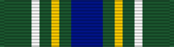

Korean Defense Service Medal
Service awardKDSM
For service in the Republic of Korea after July 28, 1954.
Check your eligibility and build your ribbon rackHow you get it
You earn this by meeting the requirements. No recommendation is needed. If it's missing from your record, current members can have their MPF add it. Veterans can request it from AFPC with a Standard Form 180 and supporting documents.
You qualify if any of these apply
- Physically present in the Republic of Korea (or its waters or airspace) for 30 consecutive or 60 nonconsecutive days
- Regularly assigned aircrew flying sorties into, out of, within, or over Korea for 30 consecutive or 60 nonconsecutive days (one day per day flown)
- Engaged in actual combat during an armed engagement in Korea
- Killed, wounded, or injured in the line of duty requiring medical evacuation from Korea
Quick facts
- Category
- Campaign and service
- Type
- Service award
- Authorized devices
- None
- WAPS points
- 0
- Position in the AFPC listing
- 54 of 91 (listed in order of precedence)
Full AFPC fact sheet text
Background
The Department of Defense approved the Korean Defense Service Medal in February 2004 to be given as recognition for military service in the Republic of Korea and the surrounding waters after July 28, 1954 and ending on such a future date as determined by the Secretary of Defense.
Criteria
Individuals must have been assigned, attached, or mobilized to units operating or serving on all the land area of the Republic of Korea, and the contiguous waters out to 12 nautical miles, and all airspace above the stated land and water areas. To be eligible for the KDSM, personnel must have been physically present in the stated areas for 30 consecutive or 60 nonconsecutive days, or must meet one of the following:
-Be engaged in actual combat during an armed engagement, regardless of the time in the areas of eligibility
-Be killed, wounded, or injured in the line of duty and required medical evacuation from the area of eligibility
-While participating as a regularly assigned aircrew member flying sorties into, out of, within, or over the area of eligibility in support of military operations. Each day that one or more sorties are flown in accordance with these criteria shall count as 1 day toward the 30 or 60 day requirement.
Medal description
The KDSM shall be positioned above the Armed Forces Service Medal. Only one award of the KDSM is authorized for any individual, regardless of the number of days over 30 (or 60), tours, TDYs, or deployments served in the areas of eligibility.
Authorized device
None
Source: Korean Defense Service Medal fact sheet, Air Force's Personnel Center